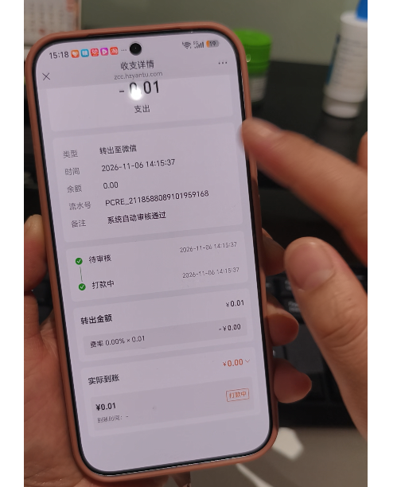

通用金「转出至微信」时，转出金额低于 0.3 元，微信侧无法打款。收支详情直接显示转出失败，并写明原因。不再停在打款中。
| 现在 | 改为 | |
|---|---|---|
| 适用范围 | 转出至微信，金额多低都会进入打款 | 只处理转出至微信。转出金额低于 0.3 元无法打款 |
| 页面状态 | 待审核通过后进入打款中，底部按钮也是打款中 | 改为 转出失败。页面不再出现打款中 |
| 失败原因 | 无 | 转出金额不可低于0.3元 |
| 0.3 元 | 同样会进打款 | 转出金额达到 0.3 元，仍按原来的流程打款 |
| 已卡住的单 | 停在打款中 | 转出至微信且转出金额仍低于 0.3 元的，打开页面也显示转出失败，原因同上 |
按转出金额判断。失败后这笔钱是否退回通用金余额，这次没说，待确认。
